Get in touch.
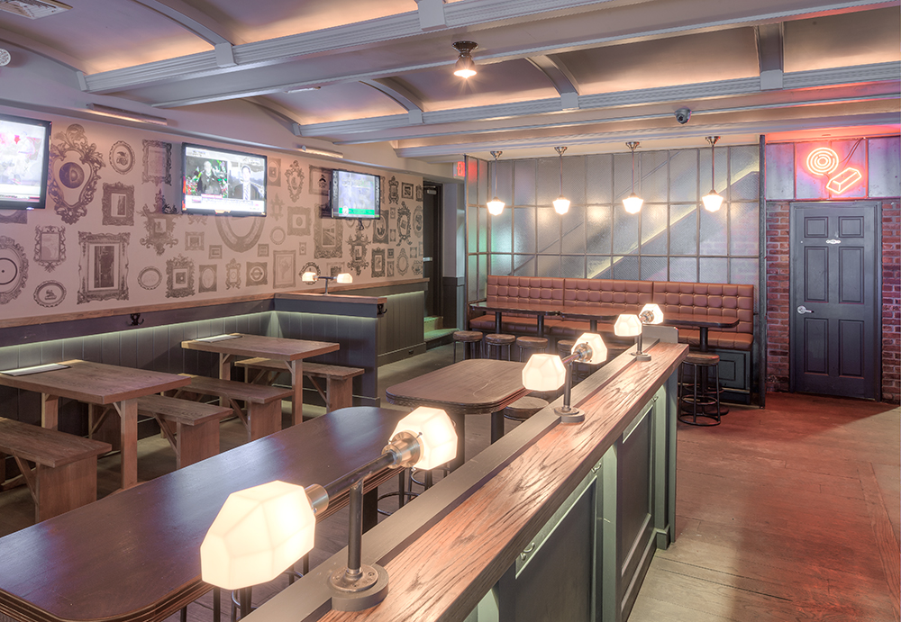
This project was in collaboration with Greg Yang Design (Architects) in New York City.
All photographs are courtesy of Harry Zernike.
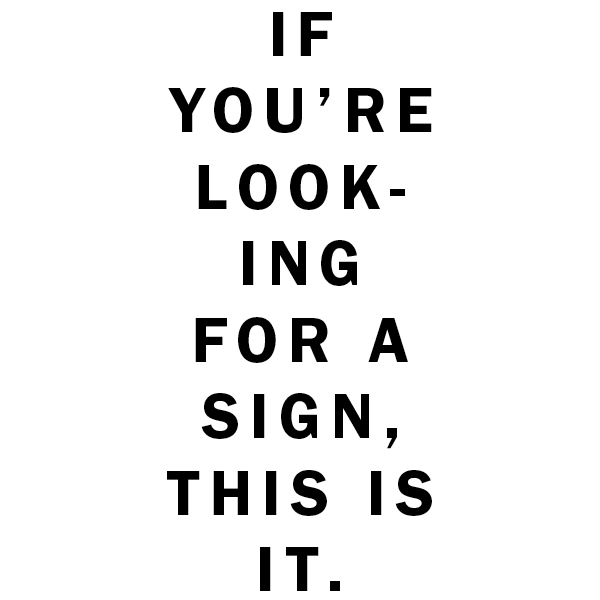
Welcome to the Central Bar located in the East Village in NYC, just blocks from union square. The owner noticed that it’s customer draw wasn’t what they were expecting from such an area. When we were asked to jump aboard this project we were really excited. The owner had a funny take on where he wanted to position the bar, they didn’t want to be THE bar to go to but the back up bar, but not even plan b, plan c.
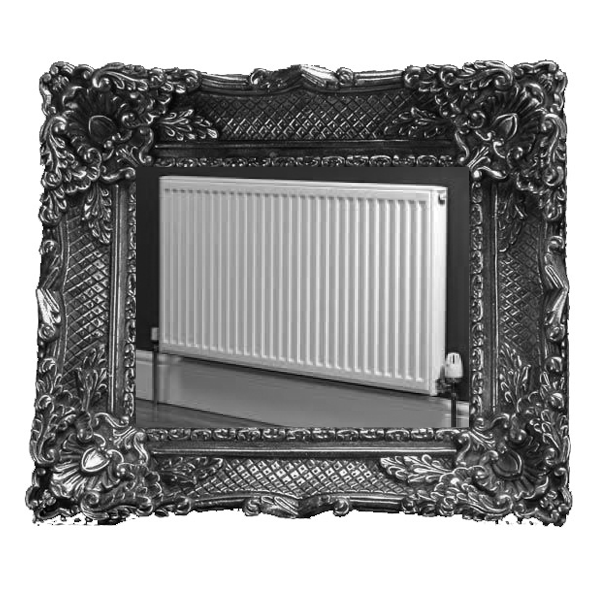
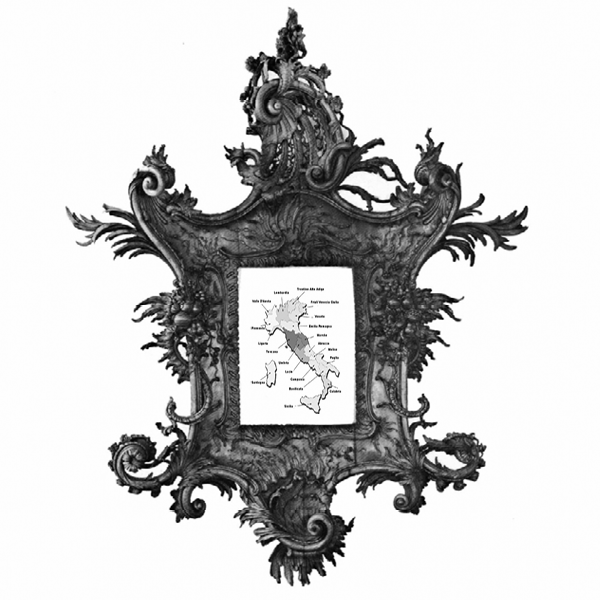
We also created a custom silk screened wall paper featuring all imagery that some how revolved around the theme central, images featured items such as but not limited to the core of the earth, central processing units, central nervous systems and central cooling units.
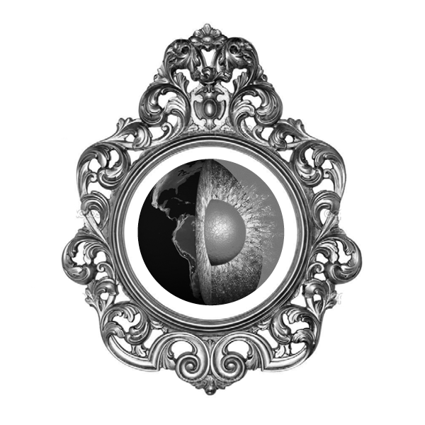
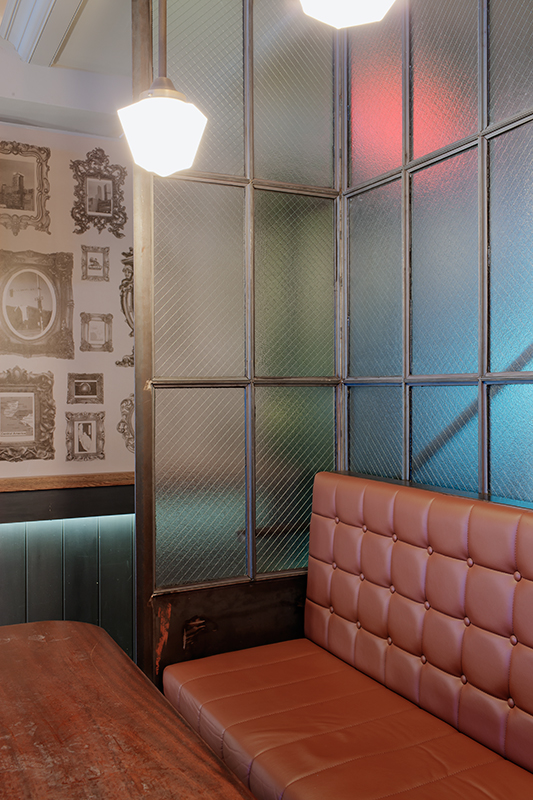
So to make it a bit more inconspicuous we left the existing pub facade so people would just keep walking. We hid a few visual cues here and there to hint that ownership had changed and created a little icon for them. We decided to take the “anti-brand” route to make Central a bit more elusive, it failed. It now has more customers than it did before.
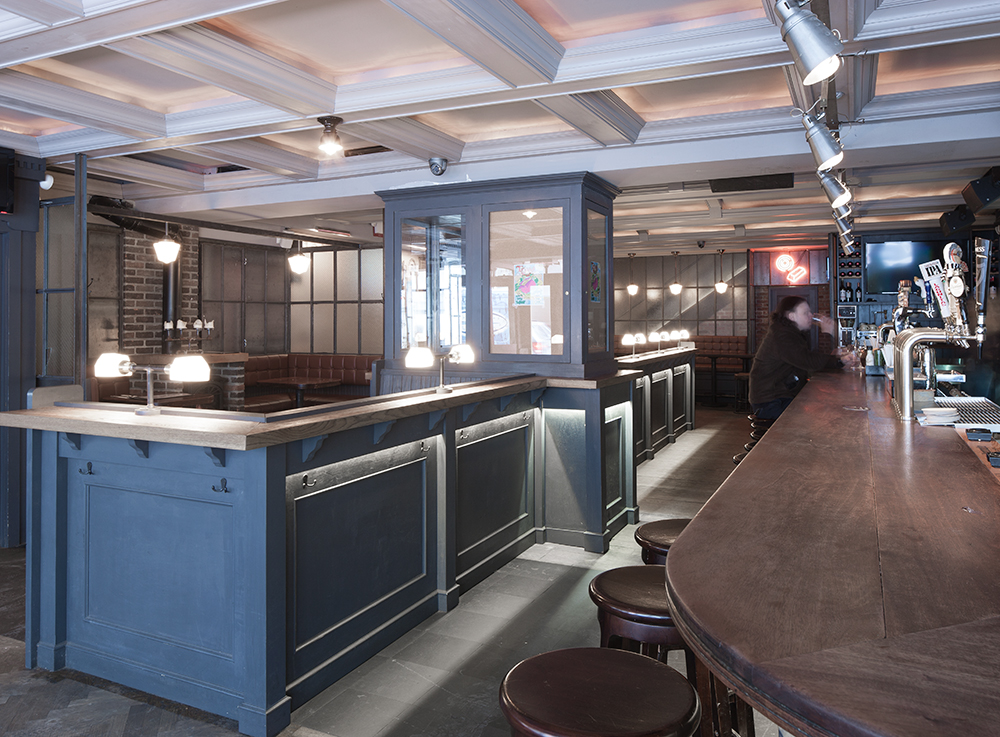
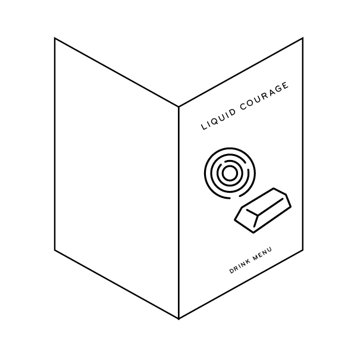
The bar also has a split personality, upstairs we created a Sol LeWitt inspired type installation, the constellations at a certain distance read CENTRAL
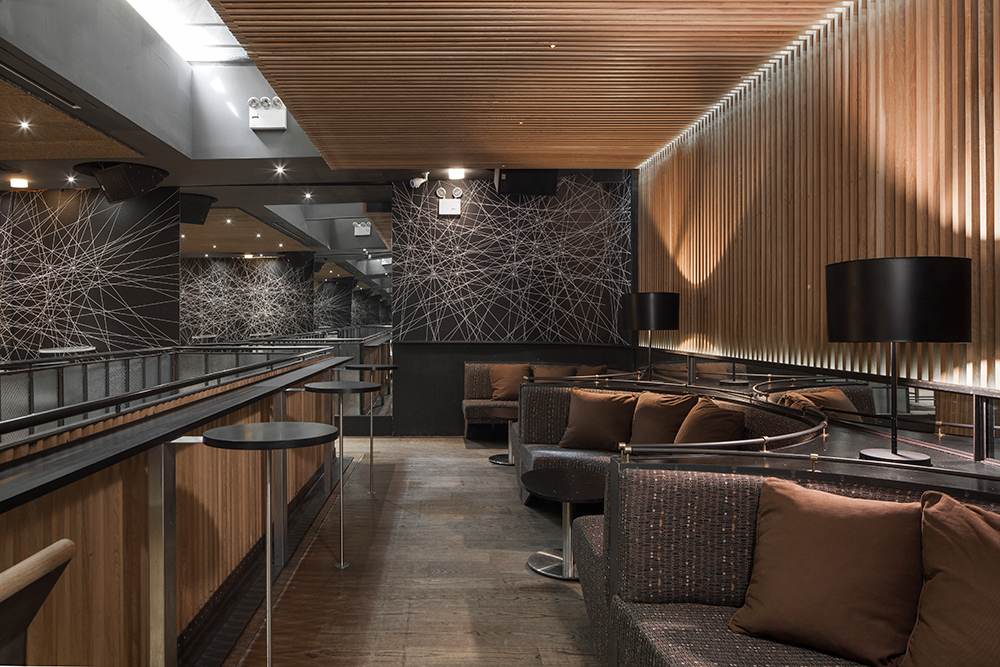
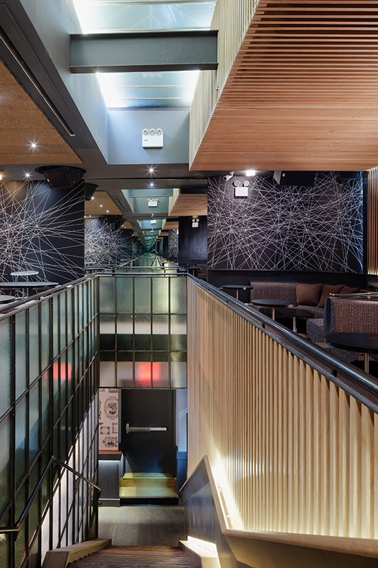
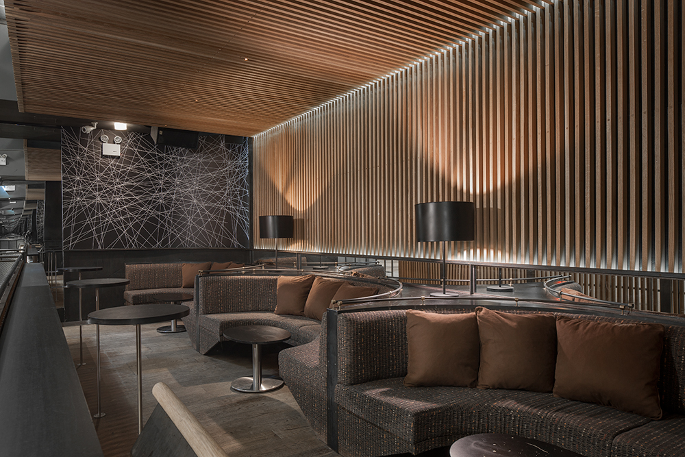
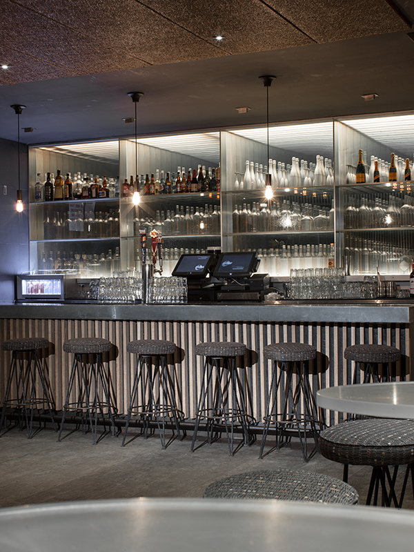